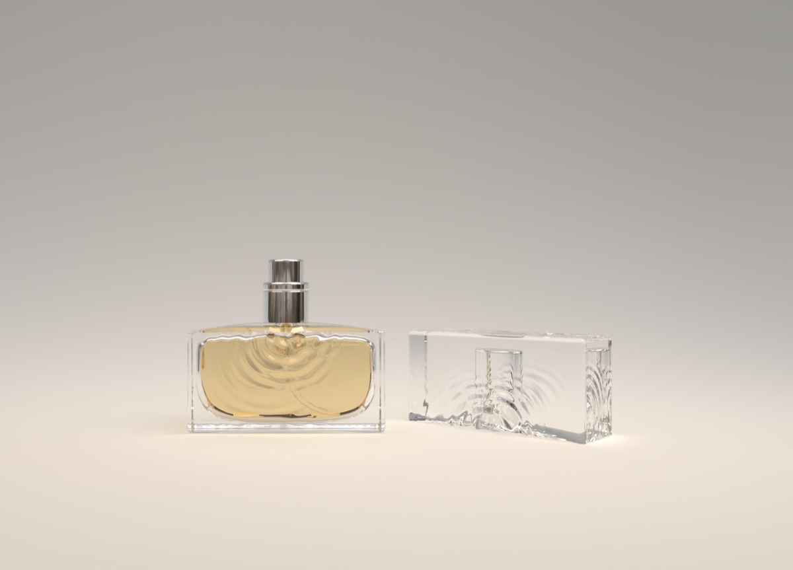
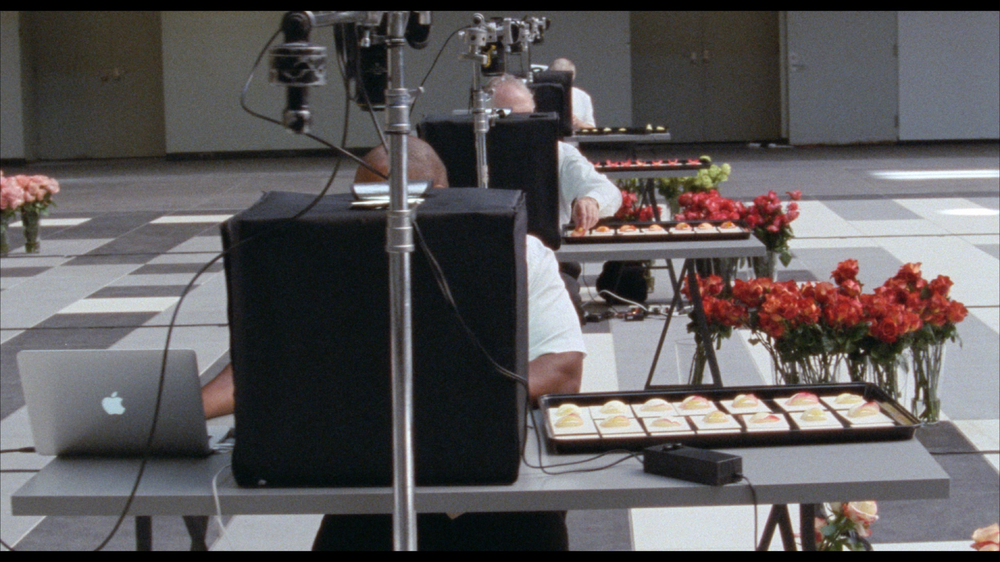
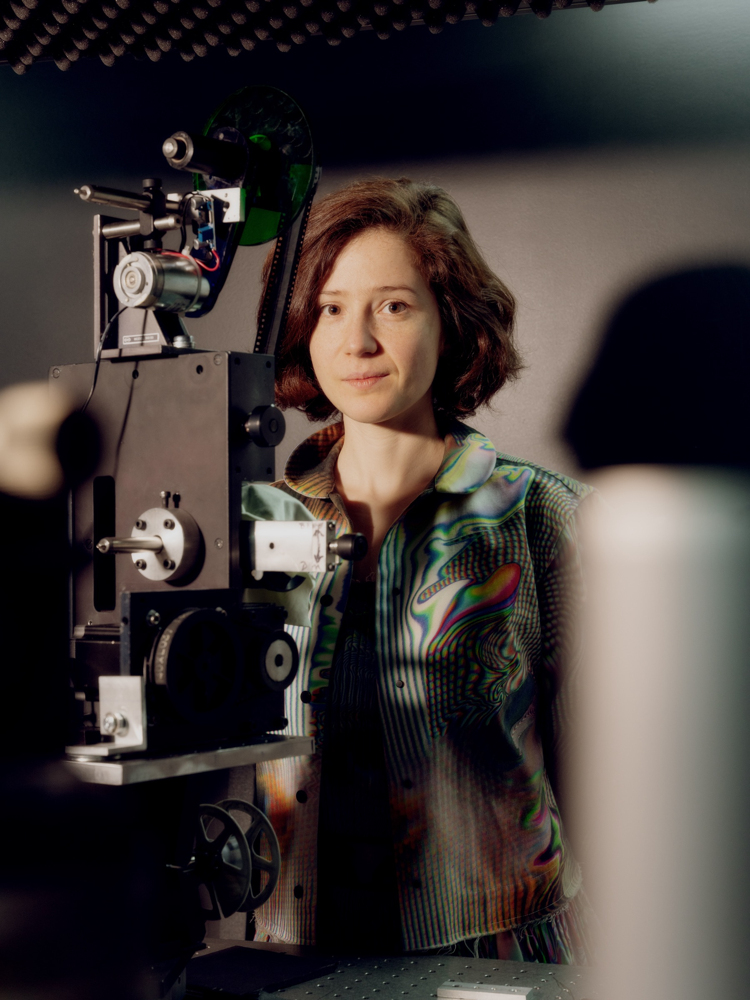

A technology-driven perfume brand producing fine fragrances that blend conceptual art practice with scientific rigor. Each scent is composed as a precise olfactive translation of color, light, and material.

An afterimage is a sensorial and perceptual trace — the lingering image on the eye after exposure to light, a memory, an impression.
The term points at the tendency for complex and precise systems to produce surprising, magical results — emergent phenomena — mirroring the way an informationally-rich formula can result in a singular impression, an abstract olfactive experience.


Photo: W MagazineConceptual artist, technologist, and founder of Studio Meyohas. Her work has been collected and exhibited at the Centre Pompidou, the ICA London, and the New Museum.
AFTERIMAGE emerges from a decade of investigations into material systems, perception, and form — from 100,000 rose petals photographed at Bell Labs to holographic sculpture and cast glass.